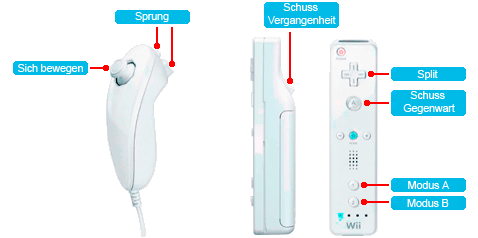
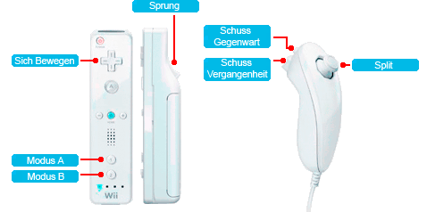
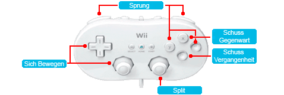
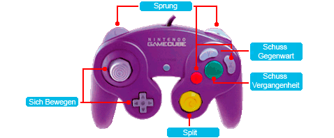

9 |
Kontrollen |
 |
In diesem Modus wird das Nunchuk benutzt, um zu springen und den Held in Bewegung zu bringen. Die Wii-Fernbedienung dient zum Abschuss und zur Benutzung der SPLIT-Macht. Ausserdem kannst du mit dem 1- und 2-Knopf das Controlmodus von A zu B oder umgekehrt umtauschen.

In diesem Modus wird die Wii-Fernbedienung benutzt, um zu springen und den Held in Bewegung zu bringen, sowie das Controlmodus umzutauschen. Mit dem Nunchuk kannst du abschiessen und die SPLIT-Macht benutzen.

Verbinde einen Classic Controller mit der Wii-Fernbedienung, um diesen Kontrollmodus zu geniessen.

Stecke einen Nintendo GameCube Controller an der Controller-Anschlussbuchse 1 ein.. Zur Aktivierung A-Knopf drücken.
 |
 |
 |
 |